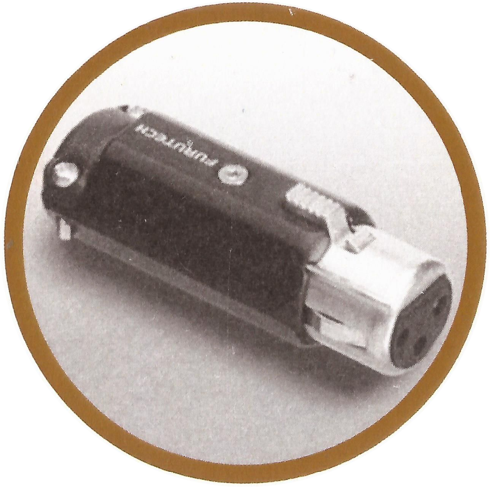
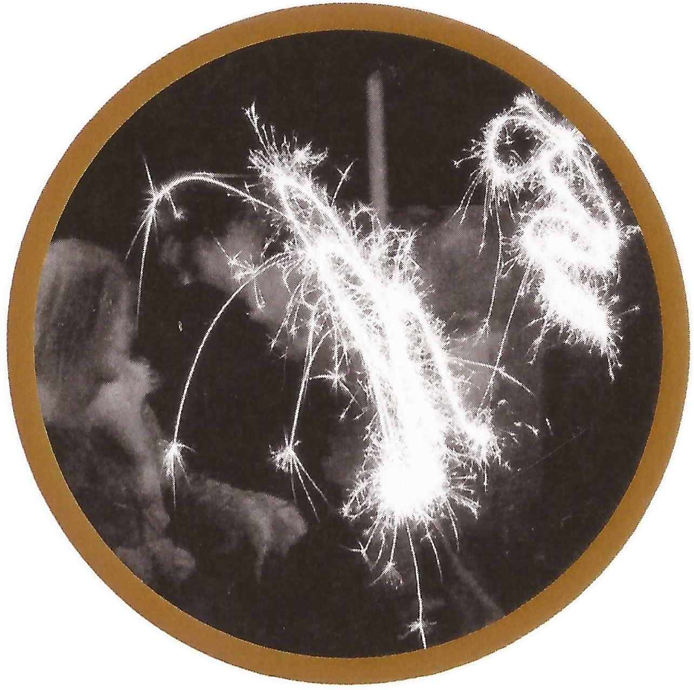
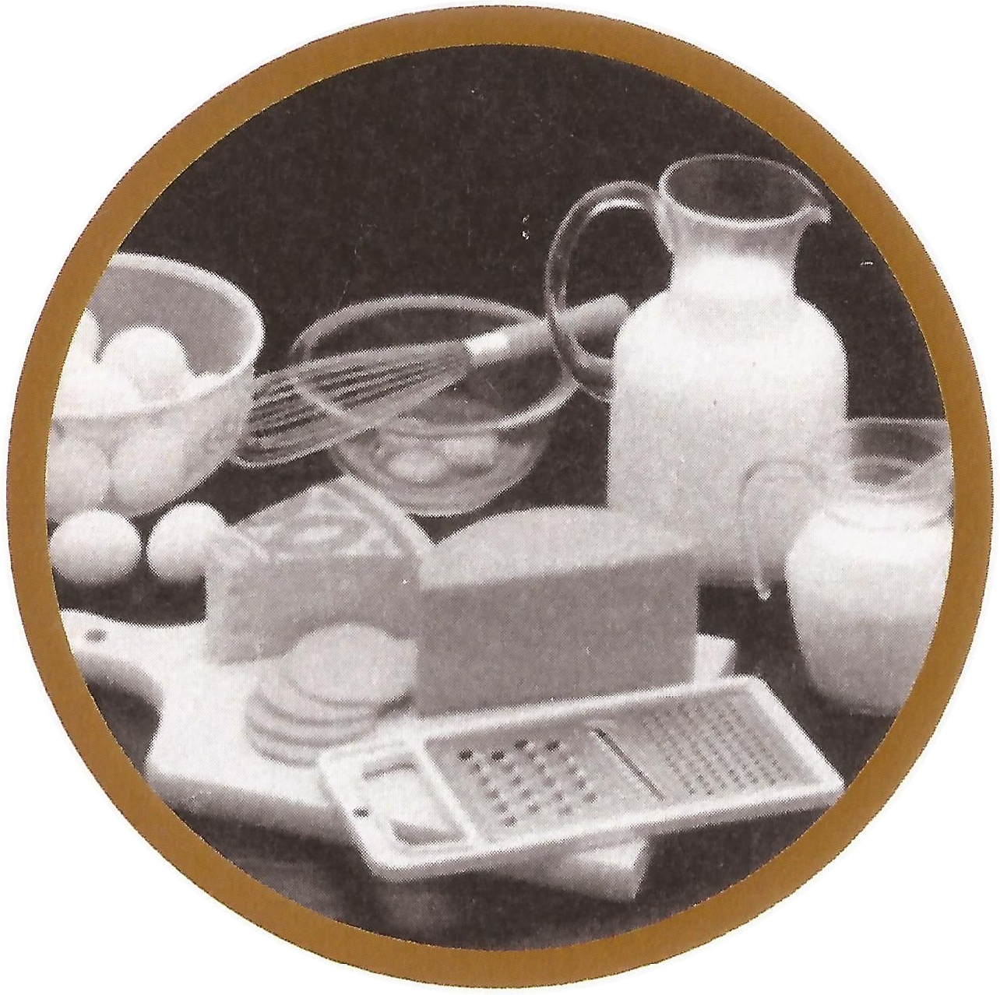
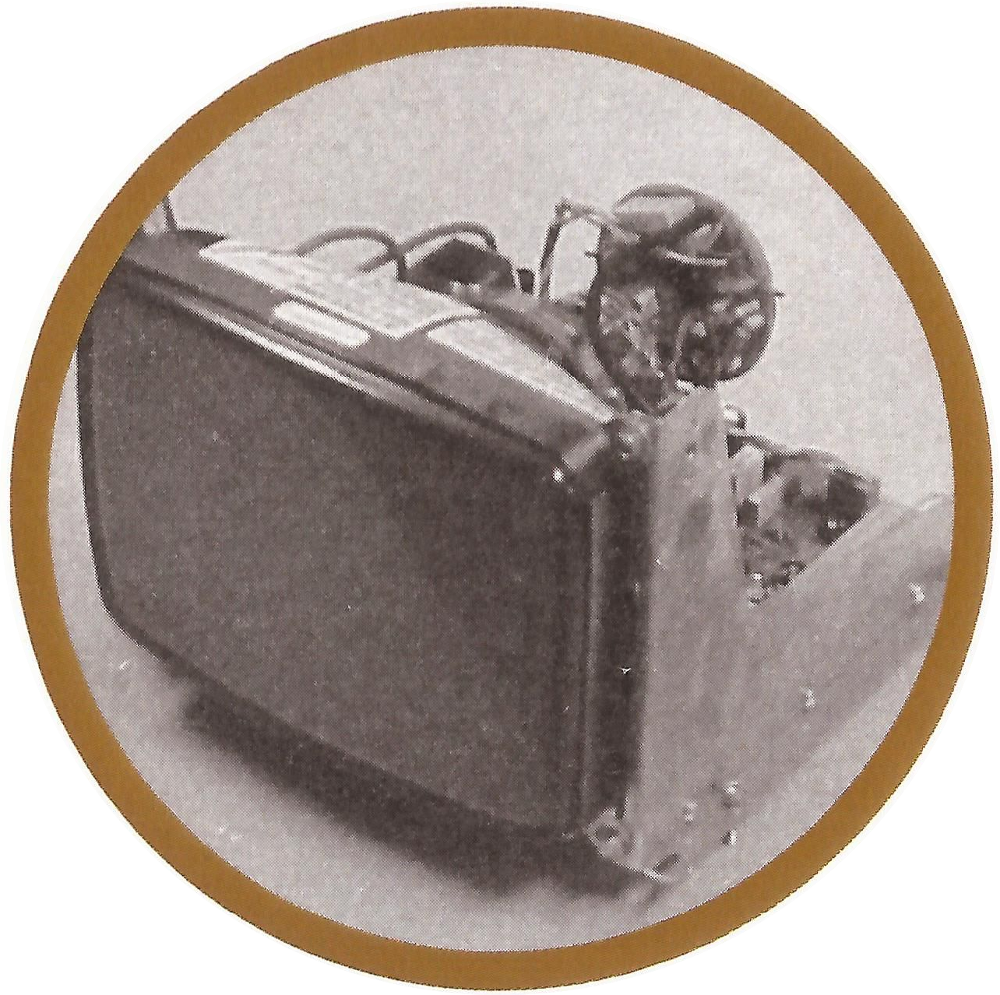
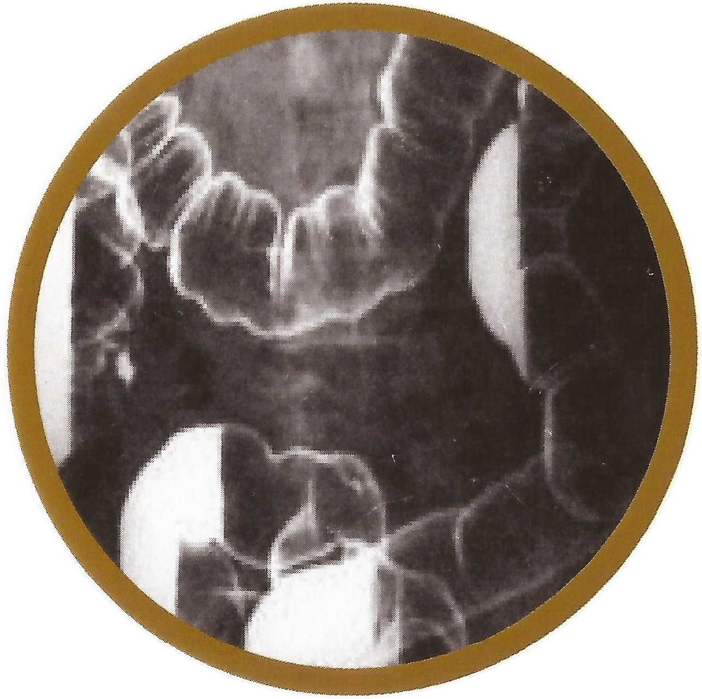

Because of its superior conductivity, this alkaline earth metal is used in the
manufacturing of electronic cables and connectors.

Sparklers contain this alkaline earth metal which produces a white flame
and sparks when ignited

Milk and other dairy products are rich in this alkaline earth metal
which is essential for building strong bones and teeth

This alkaline earth metal is used in making cathode ray tubes (CRTs), the
primary component of TVs and computer monitors. Although liquid crystal displays (LCDs) and
light emitting diodes (LEDs) are quickly replacing CRTs

Ingesting a compound consisting of this alkaline earth metal provides a contrast
in x-ray images which can help doctors diagnose problems with a patient's digestive system.

This alkaline earth metal has been used in luminous paints to
illuminate clock faces. This resulted in a famous lawsuit in the 1920s by five
dying "dial patients" against the company who exposed them to dangerous paint.